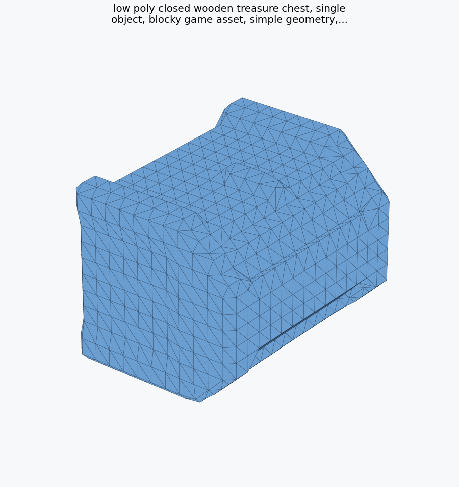
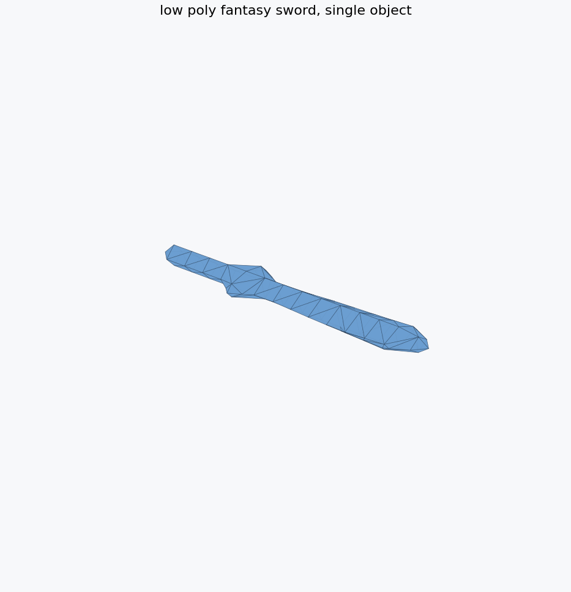
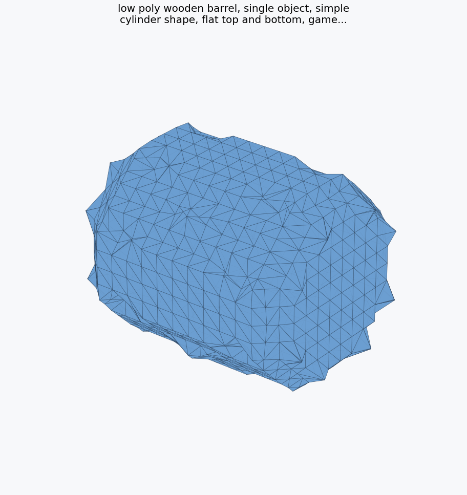
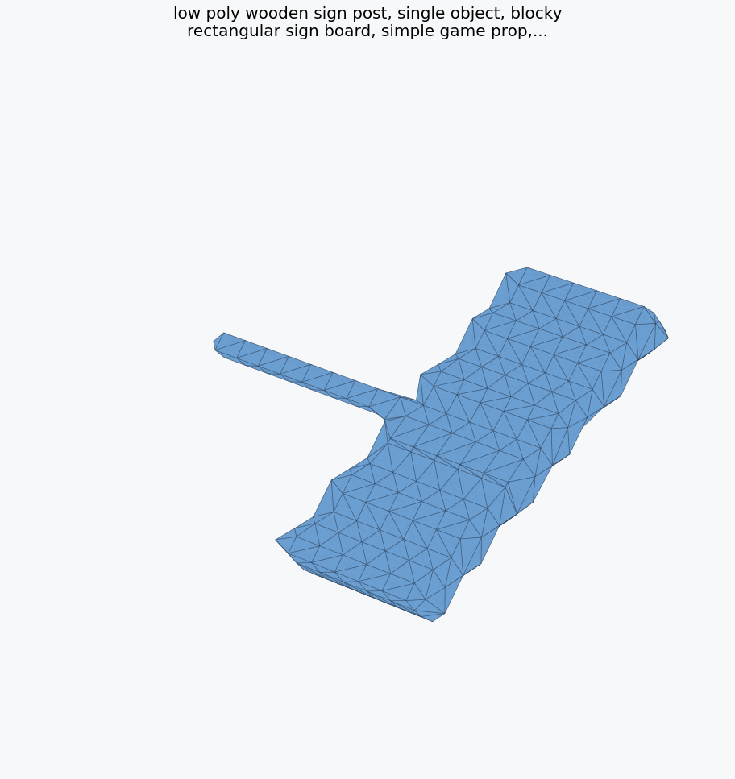
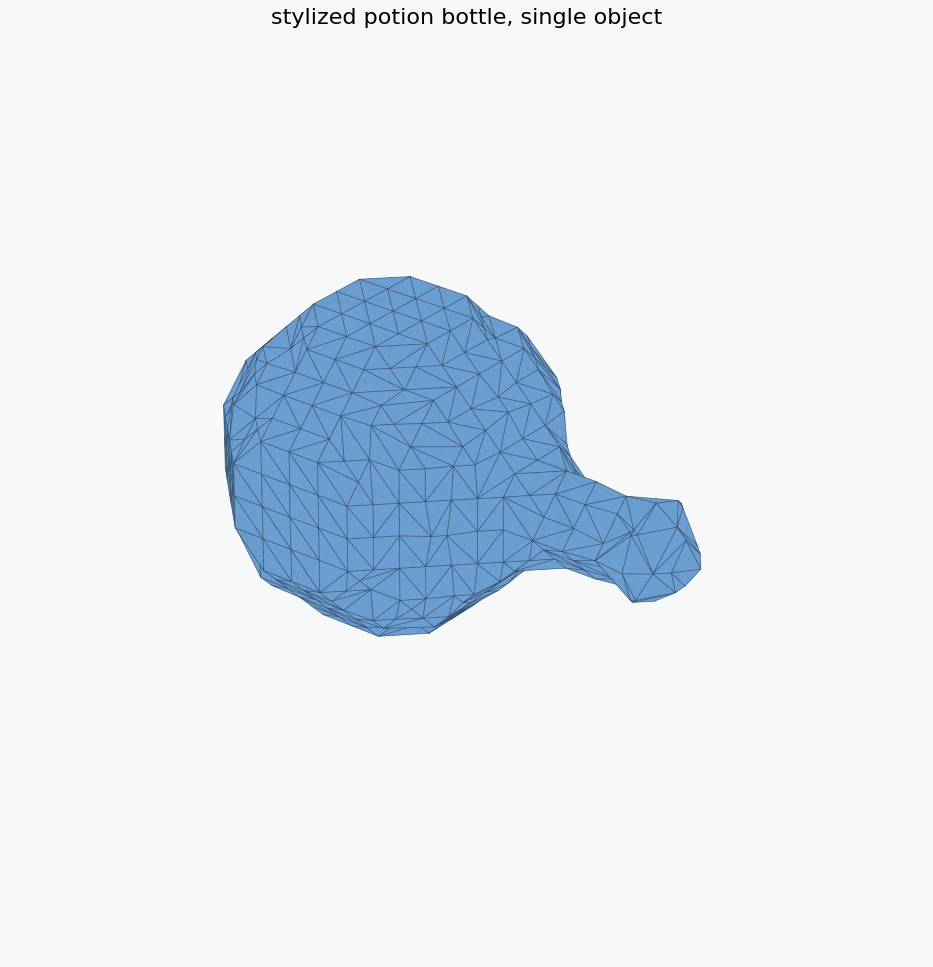
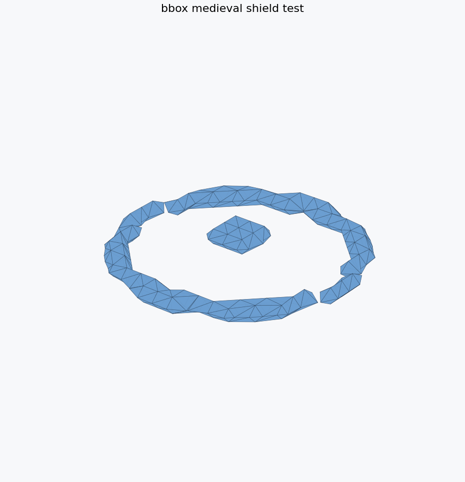

Independent technical case study. Not affiliated with Roblox Corporation.
Low-VRAM Cube 3D workflow and benchmarking toolkit for Roblox creators. Real Cube 3D v0.5 generations completed on a 6GB RTX 4050 Laptop GPU after the official high-memory path hit CUDA out-of-memory.

low poly closed wooden treasure chest, single object, blocky game asset,
6GB Quality + Simplified 12k · Ready to test
Showcase · 379.54 sec · 4.17 GB VRAM · 12000 tris · 100/100
Best current result: 6GB Quality generated a denser chest, then pymeshlab reduced it from 32,036 to 12,000 triangles with readiness 100/100.

low poly closed wooden treasure chest, single object, blocky game asset,
Low VRAM · Ready to test
Showcase · 210.61 sec · 3.93 GB VRAM · 1812 tris · 92/100
Best current proof point: recognizable blocky Roblox-style prop, 1,812 triangles, 3.93GB peak VRAM.

simple wooden crate, game asset
Benchmark Safe · Ready to test
Showcase · 218.43 sec · 3.93 GB VRAM · 2856 tris · 92/100
Strong low-poly cube prop with clean silhouette and practical triangle count.

low poly fantasy sword, single object
Benchmark Safe · Ready to test
Usable baseline · 217.08 sec · 3.93 GB VRAM · 156 tris · 92/100
Simple recognizable silhouette; useful as a low-cost benchmark asset.

low poly wooden barrel, single object, simple cylinder shape, flat top a
Low VRAM · Ready to test
Mixed · 209.73 sec · 4.05 GB VRAM · 1672 tris · 92/100
Technically successful and compact, but the silhouette reads more like an irregular cylinder than a polished barrel.

low poly wooden sign post, single object, blocky rectangular sign board,
Low VRAM · Ready to test
Mixed · 209.89 sec · 4.05 GB VRAM · 680 tris · 92/100
Technically successful and lightweight, but the silhouette is not yet a clean sign-post asset.

stylized potion bottle, single object
Benchmark Safe · Ready to test
Mixed · 219.25 sec · 3.93 GB VRAM · 968 tris · 92/100
Completed under the low-VRAM path, but the shape is more bulb-like than a polished bottle.

bbox low poly medieval round shield with simple raised rim
Low VRAM BBox Test · Ready to test
Failure case · n/a · n/a · 472 tris · 100/100
Useful negative example: the benchmark succeeded technically, but the mesh did not produce a good shield.
CubeLite stages CLIP, GPT, and shape decoding separately; keeps CLIP on CPU; disables guidance for the lowest profile; avoids KV cache; unloads GPT before decoding; and decodes with bfloat16 plus smaller chunks.
This is not official Roblox validation. The outputs are geometry-first, prompt-sensitive, and should be tested inside Roblox Studio. CubeLite does not redistribute Cube 3D weights.